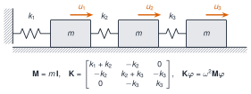

Casi todo lo que se hace con datos de vibraciones es álgebra de matrices. Un registro de varios sensores es una matriz; las propiedades de una estructura (masa, rigidez) son matrices; y sus frecuencias naturales salen de un problema de valores propios. Esta unidad enseña a manejar arrays en Julia (crear, indexar, operar elemento a elemento) y las operaciones de LinearAlgebra que se usarán en todo el curso, y termina calculando las frecuencias de un edificio de tres plantas.
NotaCómo se lee esta unidad
Tiempo orientativo: 120 minutos. Objetivos (5), teoría en cinco píldoras (25), práctica guiada (55), «Pídeselo a Claude» (15), ejercicios (15) y cierre (5). El concepto matemático de los modos y los valores propios se explica en M2 y M5; aquí interesa cómo se programa.
Objetivos y prerrequisitos
Objetivos. Al terminar esta unidad sabrás:
crear vectores y matrices, consultar su tamaño y elegir una orientación para un registro multicanal;
indexar, trocear y crear vistas sin copiar datos, y evitar los errores de aliasing;
operar elemento a elemento con broadcasting (., @.) y centrar un registro canal a canal;
resolver sistemas y calcular normas, condicionamiento y valores propios con LinearAlgebra;
construir las matrices M y K de un sistema de 3 grados de libertad y obtener sus frecuencias naturales.
Reparto con otras unidades. Las matrices con estructura (Toeplitz, Hankel, dispersas) y la SVD se tratan en M2.1 y J3.3. Leer y trocear tablas con DataFrames es el tema de J1.6.
Teoría breve
J1.5.1 Vectores y matrices
Un Vector es un array de una dimensión y una Matrix, de dos. Se crean con corchetes (el espacio separa columnas y el punto y coma, filas) o con funciones:
Ver el código
A = [1.02.0; 3.04.0] # matriz 2×2v = [1.0, 2.0, 3.0] # vector columnaZ =zeros(3, 2) # ceros, 3 filas × 2 columnast =range(0, 1, length=5) # rango de 5 puntos entre 0 y 1(size(A), length(v), size(Z), collect(t))
((2, 2), 3, (3, 2), [0.0, 0.25, 0.5, 0.75, 1.0])
Convención del curso para un registro multicanal: una matriz N × c, con las muestras en filas y los canales en columnas. Así X[:, j] es el registro completo del canal j y es contiguo en memoria, porque Julia almacena las matrices por columnas (column-major, igual que MATLAB y Fortran, y al revés que NumPy). Es lo que devuelven las funciones de lectura de Resonancia.jl (leer_torroja da una matriz N × 3).
Un registro de 3 canales y 1000 muestras en Float64 (8 bytes por número), ¿cuántos bytes ocupa?
\(1000\cdot3\cdot8=24\,000\) bytes (sizeof(X) en Julia).
J1.5.2 Indexación, trozos y vistas
Los índices empiezan en 1 y se escribe A[fila, columna]. Los dos puntos : seleccionan toda una dimensión, end es el último índice y los rangos seleccionan trozos:
Un trozo como X[:, 2]copia los datos. Para trabajar sobre una parte sin copiar se usa una vista (view, o la macro @views para toda una expresión): se comporta como un array pero comparte memoria con el original, y por eso modificarla modifica el original.
Ver el código
Y =copy(X)vista =@view Y[:, 2]Y[1, 2] =100.0(vista[1], X[1, 2]) # la vista ve el cambio de Y; X, copia aparte, no
(100.0, 5.0)
AdvertenciaErrores frecuentes
B = Ano copia: B y A son dos nombres del mismo array, y B[1, 1] = 99 cambia también A. Para una copia independiente hay que escribir B = copy(A). Es el error de aliasing más común, y ocurre igual en NumPy.
Tras A = [1 2; 3 4]; B = A; B[1, 1] = 99, el valor de A[1, 1] es 99.
Verdadero. B = A solo crea un segundo nombre para el mismo array. Con B = copy(A) no ocurriría.
J1.5.3 Broadcasting
Un punto delante de un operador o detrás de una función la aplica elemento a elemento: x .+ 1, x .* y, sin.(x). Cuando las dimensiones no coinciden, Julia expande la más pequeña, y eso permite restar a cada columna su media sin bucles. La macro @. pone el punto en toda la expresión.
Ver el código
Random.seed!(1)tt = (0:999) ./100.0senal =sin.(2π *2.5.* tt)Xr =hcat(2.0.+ senal, -1.0.+0.8.* senal, 0.5.+0.1.*randn(1000)) # 1000×3, con medias distintasmedias =mean(Xr, dims=1) # 1×3Xc = Xr .- medias # cada columna menos su mediaround.(vec(mean(Xc, dims=1)), digits=12)
3-element Vector{Float64}:
-0.0
-0.0
-0.0
NotaIdea clave
Para centrar un registro canal a canal se resta una fila de medias a toda la matriz: X .- mean(X, dims=1). Sin bucles, sin copiar canal a canal, y vale para 3 canales o para 300.
Con a = [1, 2, 3] y b = [10, 20, 30], ¿cuánto vale sum(a .* b) menos sum(a .+ b)?
.* multiplica elemento a elemento: 10, 40, 90. .+ suma elemento a elemento: 11, 22, 33.
\(\sum a_ib_i=10+40+90=140\) y \(\sum(a_i+b_i)=11+22+33=66\), así que la diferencia es \(140-66=74\).
J1.5.4 LinearAlgebra
La biblioteca estándar LinearAlgebra aporta lo esencial: el producto A * B (que no es elemento a elemento), la traspuesta A', la solución de sistemas con A \ b, normas, determinante, condicionamiento y valores propios.
TipChuleta: LinearAlgebra
usingLinearAlgebraA * B # producto matricial (A .* B es elemento a elemento)A'# traspuesta (conjugada si es compleja)A \ b # resuelve A x = b (¡no uses inv(A) * b!)norm(v) # norma 2 de un vector; opnorm(A) la de una matrizcond(A) # número de condicióneigen(A) # valores y vectores propioseigen(K, M) # problema generalizado K φ = λ M φDiagonal(d) # matriz diagonal a partir de un vectorI # identidad (tamaño según el contexto)Symmetric(A) # marca la matriz como simétrica (algoritmos más rápidos)
La regla de oro: resolver con A \ b, que usa una factorización estable, y no calcular inv(A), que es más lento y menos preciso. El condicionamiento mide cuánto se amplifica un error en los datos; si cond(A) es 10ⁿ, se pierden unas n cifras decimales (se justifica en M2.1).
Para resolver \(\mathbf A\mathbf x=\mathbf b\) es mejor calcular primero inv(A) y multiplicar por b.
Falso. A \ b es más rápido y numéricamente más estable, porque factoriza A en lugar de invertirla.
J1.5.5 Valores propios y modos
Un sistema lineal de \(n\) grados de libertad sin amortiguamiento vibra libremente según \(\mathbf M\ddot{\mathbf u}+\mathbf K\mathbf u=\mathbf 0\). Buscando soluciones armónicas \(\mathbf u=\boldsymbol\varphi\,e^{i\omega t}\) se llega al problema de valores propios generalizado
cuyas soluciones son las frecuencias naturales\(f_i=\omega_i/2\pi\) (en Hz) y las formas modales\(\boldsymbol\varphi_i\). En Julia: eigen(Symmetric(K), Symmetric(M)) devuelve los \(\omega_i^2\) y los vectores. El modelo del que se parte es el de la Figura 1.

Figura 1: Edificio de cortante de tres plantas como sistema de masas y muelles. Cada planta tiene masa \(m\), los entrepisos tienen rigideces \(k_1\), \(k_2\) y \(k_3\) y \(u_i\) es el desplazamiento lateral de la planta \(i\). Las matrices \(\mathbf M\) y \(\mathbf K\) y el problema de valores propios aparecen debajo.
Con \(m\) en kg y \(k\) en N/m, ¿en qué unidades salen \(\omega^2\) y \(f\) del problema ecuación 1?
\(\omega^2=k/m\) sale en s⁻², así que \(\omega\) está en rad/s y \(f=\omega/2\pi\) en Hz.
Práctica guiada
Vamos a construir las matrices del edificio de la Figura 1, calcular sus frecuencias naturales y formas modales y comprobarlas con Resonancia.jl. Los datos son los del caso transversal de M2: \(m=2\cdot10^5\) kg por planta y \(k_1=k_2=5\cdot10^7\) N/m, \(k_3=4\cdot10^7\) N/m.
Las tres frecuencias son 1,105 Hz, 2,939 Hz y 4,390 Hz. Es lo habitual en un edificio: el primer modo, con todas las plantas moviéndose en el mismo sentido, es el de menor frecuencia, y cada modo superior añade un cambio de signo en la forma.
Paso 3. Comprobar con el paquete.Resonancia.jl tiene el mismo modelo y la misma función. Se verifica que los resultados coinciden y que los modos son ortogonales respecto de M.
Figura 2: Formas modales del edificio de tres plantas. En cada panel se dibuja el desplazamiento de las tres plantas (eje vertical, con el suelo en cero) normalizado a un máximo de 1 en valor absoluto. El primer modo no tiene nodos; el segundo, uno; el tercero, dos.
Paso 4. Un registro de tres canales. Para practicar el centrado, se simulan tres sensores con desfases de continua distintos y se comprueba que tras restar las medias quedan en cero, y se calcula la covarianza entre canales.
Los canales 1 y 2 están muy correlacionados (0,91) porque comparten el modo de 2,5 Hz; los canales 2 y 3 (0,31), solo parcialmente, por el de 7 Hz; y los canales 1 y 3 casi nada. La matriz de covarianza es simétrica y sus valores propios (0,010, 0,082 y 0,849) dicen cuánta varianza hay en cada dirección: es el punto de partida de la descomposición en valores singulares que se estudia en M2.
La versión probada con pytest, con las frecuencias contrastadas con las de Julia, está en python/arrays.py. Con NumPy y SciPy:
import numpy as npfrom arrays import matrices_3gdl, frecuencias_propias, centrar_por_canalM, K = matrices_3gdl()print(frecuencias_propias(M, K)) # [1.1048 2.9387 4.3902] HzX = np.random.default_rng(1).normal(size=(1000, 3))Xc = centrar_por_canal(X) # X - X.mean(axis=0, keepdims=True)
Diferencias respecto de Julia: los índices empiezan en 0; NumPy guarda por filas (row-major), así que lo natural es una matriz canales × muestras, y un trozo como X[:, 1] es una vista por defecto (en Julia es copia); el producto matricial es A @ B y A * B es elemento a elemento, al revés que en Julia.
NotaQué se ha conseguido
Se han construido M y K de un sistema real, se han obtenido sus tres frecuencias naturales (1,105, 2,939 y 4,390 Hz) y se han contrastado con el paquete del curso, se han dibujado los modos y se ha centrado un registro multicanal sin bucles. Con estas piezas empieza M5.
«Pídeselo a Claude»
TipPrompt
«Con Julia y --project=.: (1) construye las matrices de masa y rigidez de un edificio de cortante de tres plantas con masas de 2·10⁵ kg y rigideces de entrepiso de 5·10⁷, 5·10⁷ y 4·10⁷ N/m; (2) calcula sus frecuencias naturales en Hz y las formas modales con eigen(Symmetric(K), Symmetric(M)); (3) compara con edificio_tres_plantas y modos_propios de Resonancia.jl; (4) comprueba que Phi' * M * Phi es la identidad. Resuelve con \ y no uses inv. Dime los valores. No inventes resultados: si algo no coincide, dilo.»
Verifica. (a) Que las frecuencias son 1,105, 2,939 y 4,390 Hz, y que el orden de magnitud es razonable: una sola planta de las mismas \(m\) y \(k\) daría \(\sqrt{k/m}/2\pi\approx2{,}5\) Hz. (b) Que K es simétrica y que la fila 1 suma \(k_1\) y las filas 2 y 3 suman cero (una estructura sin apoyos no tendría rigidez para el movimiento de sólido rígido). (c) Que usa Symmetric y que no calcula inv(K). (d) Que las unidades son kg, N/m y Hz, y que divide por \(2\pi\) al pasar de rad/s a Hz. (e) Que no sobrescribe M o K con operaciones que modifican en sitio sin avisarlo.
Ejercicios
¿Cuánto vale la primera frecuencia natural del edificio de la práctica?
\(f_1\approx1{,}1048\) Hz (f[1] en el paso 2).
Un sistema de una sola planta, de masa \(m=2\cdot10^5\) kg y rigidez \(k=5\cdot10^7\) N/m, tiene \(f=\tfrac{1}{2\pi}\sqrt{k/m}\). ¿Cuánto vale?
\(\sqrt{5\cdot10^7/2\cdot10^5}=\sqrt{250}=15{,}81\) rad/s, y \(f=15{,}81/2\pi\approx2{,}5\) Hz. Con tres plantas la primera frecuencia baja a 1,1 Hz porque la masa que se mueve es mayor.
Con X = [1.0 10.0; 2.0 20.0; 3.0 30.0], ¿cuánto vale sum(X .- mean(X, dims=1))?
Cada columna queda con media cero, así que la suma total también.
Cero (salvo un error de redondeo del orden de 10⁻¹⁵). Es la propiedad que define el centrado por canal.
Explica por qué se escribe K \ F en lugar de inv(K) * F para hallar los desplazamientos estáticos \(\mathbf u\) de \(\mathbf K\mathbf u=\mathbf F\).
Dice que \ factoriza la matriz y no necesita calcular la inversa.
Menciona que es más rápido o más preciso (menos error de redondeo).
La doy por superada si…
Creo vectores y matrices y consulto su tamaño; sé que el registro del curso es N × c.
Distingo copia, vista y alias, y sé cuándo B = A es peligroso.
Centro un registro canal a canal con X .- mean(X, dims=1).
Resuelvo A \ b y calculo cond, norm y eigen.
Construyo M y K de un sistema de 3 GDL, obtengo sus frecuencias y las contrasto con Resonancia.jl.
Cierre. Escribe tres líneas: qué he entendido, qué todavía no domino y cuál es mi siguiente paso pequeño. Revisa con git diff lo que haya escrito Claude antes de aceptarlo.